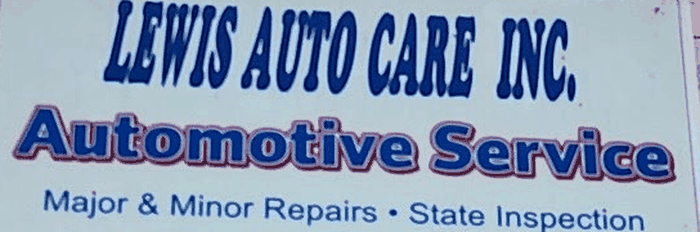

Fleet service done right by Lewis Auto Care in Enola, PA. Every job comes with a straight answer and a fair price - call (717) 307-9890 or start with a free quote below.
Get a free estimate See our work